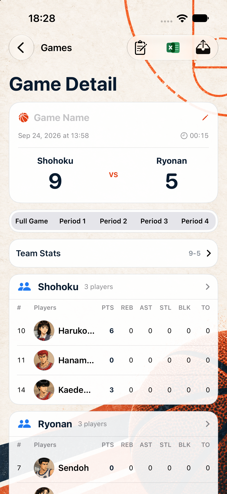
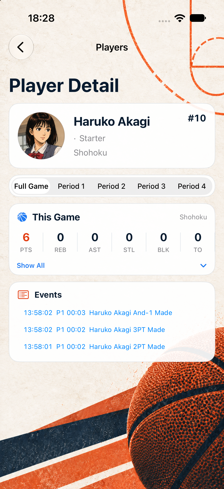

B 方案已实施并完成真实模拟器截图
本轮严格按 B 方案的页面顺序、卡片层级、圆角、颜色、统计排布和导航结构重组视觉层，并叠加当前项目的全局篮球背景；保留原有数据、导航和按钮功能，没有修改记分操作页面。
SavedGame、PlayerStats 和分析结果，没有新增存储字段。BasketballRecord/Views/Game/ 下的记分操作界面。

xcodebuild ... Debug build：成功；Release 模拟器编译也成功。git diff --check：通过。2026-9 展开后确认存在真实比赛记录 Shohoku vs Ryonan，截图使用该记录，不是静态 mock 图。label_full_game 本地化 key，避免 iPhone 17 上周期文案被裁切。-screenshotDetail game|player 仅在 DEBUG 构建生效，用于 UI 截图验收，不进入 Release。